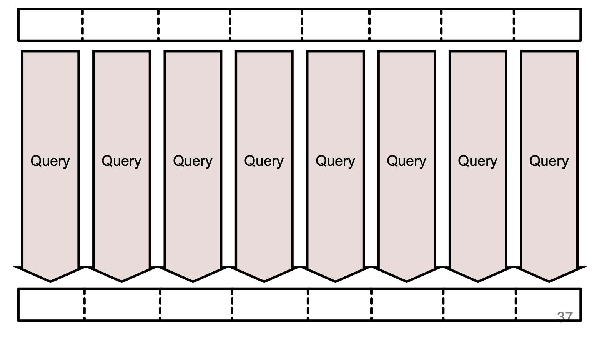
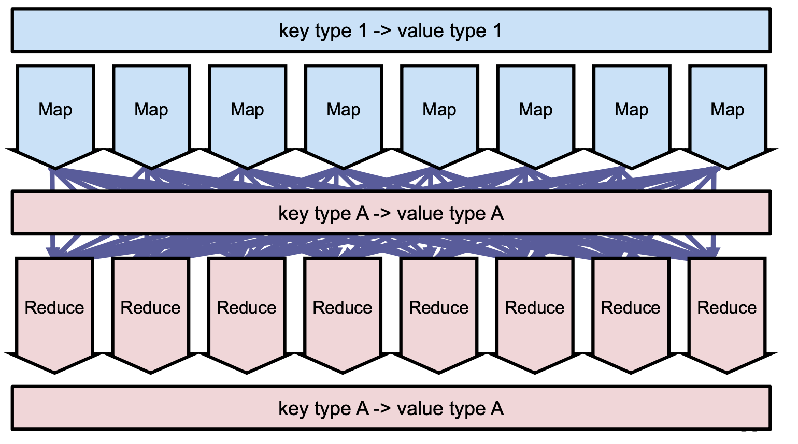

MapReduce
This post go briefly over the key idea of using MapReduce as a way to parallelize operations over multiple distributed machines.
This was in fact the first tool that was developed for parallelizing computation over multiple machines and not simply to use multiple machines for the storage layer.
The logical Layer
The basic idea of MapReduce is to take the data from the storage layer (be it in on block-storage, HDFS, the local file system) and independently from the storage format (i.e. be it in tree form, tabular form etc.) process it in a distributed parallel fashion.
In order to do that MapReduce leverages on the idea of dividing
the input data into several chuncks. And operate on these different
chuncks independently. The name of MapReduce come then in this
sense by the fact that the way we operate on the data is by
Mapping the input chuncks data to some processed data given some
function. And finally by aggregating, i.e. Reducing such
distributed computations.
In the best case scenario we would therefore observe a situation close to the following one

I.e. in the ideal situation we would simply have to rely on the
input chuncks to perform our MapReduce job as all of the necessary
information is contained in there.
This is ideal in the way that all of the data live over the same machine and no big networking bandwidth and coordination issue arise to transport the necessary data from the distributed network of machine to the CPUs where the necessary computation is performed.
However, this is not always the case and possible as we might well run into cases where we need additional information such as when we desire to output some sorted result or in the case we might want to sum over all of the data. In such case we indeed run into the case where we would have to communicate over the entire distributed network and transport the bits of information across.
The general MapReduce situation looks therefore rather as follows:
A final thing to notice is that the input data of MapReduce must be
of a format through which the mapping and reducing component of
the operations makes sense overall. In this sense while you might
well operate on any data format stored (be it tabular, tree etc.)
when feeding the data you must transform them into a key-value
form. In such a way it will then be possible to apply the mapping
function on each and every key-value tuple and finally to
aggregate over the keys.
However, important to notice is here that the key-value pairs do not
have to share the same form after each mapping function but they
rather have to respect simply the key-value structure where at
each step a key with the corresponding value is identifiable.

Internal Operations of MapReduce Job
Important is to understand what goes on under the hood when you launch a Hadoop MapReduce job.
While the user simply specifies the map and the reduce component
that is necessary to perform the job, behind the scenes Hadoop
takes care of three different tasks.
It first splits the stored key-values in logical 128MB blocks -
the usual HDFS block size where the data live -. Such splits -
i.e. the underlying HDFS blocks - should store as homogeneous keys
as possible.
The map acts then on the logical splits above. After the map
occurs it sorts the data by keys and partition them over all of the
distributed machines. The reducer is then applied.
Important is here to understand that if the map resulted in same
homogeneous keys on different machines these represent already
partitioned keys on which the reducer is applied.
The physical Layer / Architecture
MapReduce acted originall right on top of HDFS. It leveraged
therefore the existing master-slave architecture for assigning the
parallel computation jobs across machines.
Recall that in HDFS you observe a Namenode acting as Master -
i.e. assigning the replication and tasks across of the distributed
network and keeping the state of the latter - and various DataNodes
acting as Slaves - i.e. storing the data and sending state information
to the master -.
Hadoop MapReduce adds another Master, the JobTracker being
responsible for assigning and distributing the tasks among the slaves,
i.e. the TaskTracker, executing the computations.
Often the Master processes of the JobTracker and the NameNode live
on the very same machine as well as the TaskTracker and DataNodes
processes.
Notice, also that the benefit of having the TaskTracker on the same
physical machine of the DataNode is that it might well be possible
to shortcircuit the shuffling as if data are well
distributed/splitted by key in the network it might well be that for
many most common operations you can act locally on the data of the
DataNode for the map component.
Important, is then to understand that it is the job of the
JobTracker to assign the different map and reduce tasks to the
different TaskTrackers.
The process looks then as follows
Three important remarks:
- It is in fact the job of the
JobTrackerto assign the differentMapjobs to the differentTaskTrackersin a way that the shortcircuiting is maximized. - This first version of MapReduce was highly inefficient as resources were sitting idle as resources are being assigned at the beginning of MapReduce. Slots reserved to the Reducer will therefore be idle in the mapping phase, while slots reserved to the Mapper will be idle in the Reduce phase.
- An HTTP server, be it an apache or ngnix, is available on each
TaskTrackernode. In the reducer phase a process on the TraskTracker is then responsible for getting the necessary keys for each reduce job via HTTP connection over the different TaskTracker servers. This is where the expensive shuffling takes place.
On Shuffling Optimization
It is clear that shuffling is expensive. The coordination game is expensive, the network bandwidth is used and the waiting time for each job increase.
A desire in MapReduce is therefore to reduce the shuffling of the data to the bare minimum.
In order to do that MapReduce often works with a Combiner phase that acts in the middle of the mapping and reducer phase.
The key idea here is that if it is possible to compress the data through the reduce function before the shuffling phase, then of course you would have synthesize the amount of data while keeping the information and the sheer size of the data to be transmitted over HTTP is highly reduced.
Two conditions must be fulfilled so that the combine operation above is possible via the reduce function
- key-values for reduce input and reduce output must be identical.
- the commutative and associative laws must hold, i.e. it does not matter which operation is done first and in which order you aggregate the operations.